The infrastructure as code (IaC) sharing economy drastically reduces the “time to hello world” for infrastructure developers. Security is usually not a consideration for IaC modules or templates explicitly built for reuse and shared in central repositories like the Terraform Registry or Artifact Hub.
In this three-part series, we scanned open-source Helm charts shared on Artifact Hub using our Helm Scanner and Checkov to understand how secure by default the open-source Kubernetes ecosystem is.
In part one, we introduced the importance of securing infrastructure code in the same way we test our application code and dependencies for vulnerabilities. We shared high-level findings from our analysis of open-source Helm charts on Artifact Hub. In this post, we’re diving a level deeper to look at Helm’s dependency-driven nature from a security perspective.
Analyzing Helm dependencies
Unlike scanning a custom-written Kubernetes manifest, the Helm syntax allows multiple layers of dependencies to be defined. In the same way that package managers for programming languages often scan and advise on upstream security issues in dependencies, it is important to consider the same approach with IaC to avoid inheriting insecure configurations.
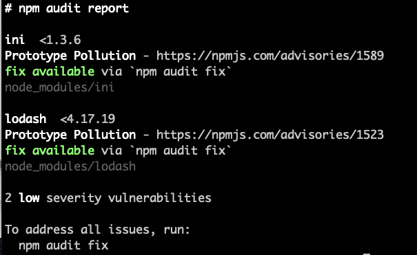
As studied in this report, Helm 3 resolves dependencies at point-of-use. That means that in order to accurately assess the overall security posture of a given Helm output, we need to take all dependencies into account.
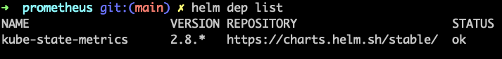
If a dependency does not meet security best practices, then the downstream module also needs to be considered insecure, as with any other codebase utilizing code reuse.
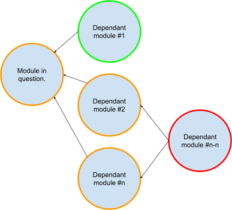
To better understand dependency usage across our data, we graphed each module and its dependencies, then marked the dependencies as such:
- Green: All scanned charts
- Blue: Charts wherein the dependency Uniform Resource Identifier (URI) contains the same name as the current Helm repository of the chart. These are likely org-only dependencies for internal reuse.
- Black: Charts wherein the dependency has no URI and just a local file path. These are likely “chart-only” dependencies stored locally with the chart for readability and code management.
- Red: All other dependencies for further investigation are potentially reused cross-org and cross-repo, allowing more potential blast-radius for misconfigurations.
Below, for example, we see the drycc/workflow chart using a number of dependencies, all from a similarly named URI, so we mark them blue:
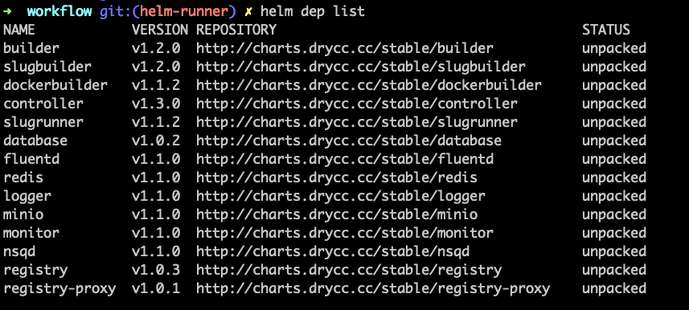
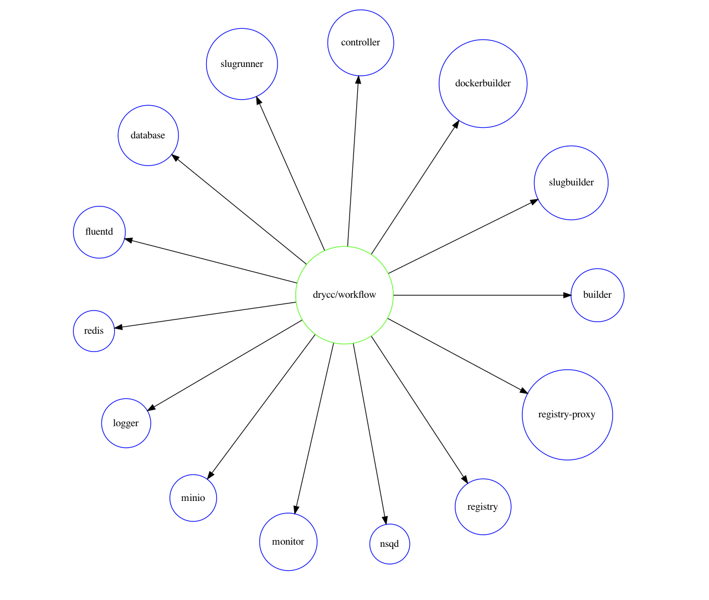
The diagrams created will never create two objects for the same dependency URI, so two nodes on the graph named “postgresql,” for example, will be two separate charts from different locations.
In examining chart dependencies, we noticed a lot of fragmentation and duplication of reusable content. Even within the same repository, for example, we found three separate instances of MySQL dependencies and two of PostgreSQL across sixteen total charts:
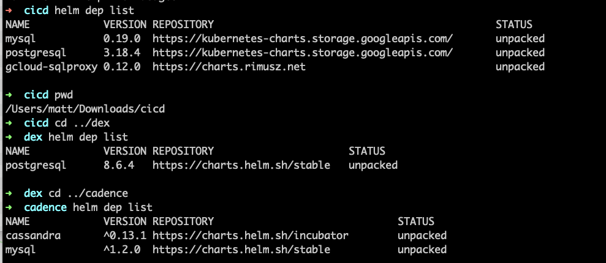
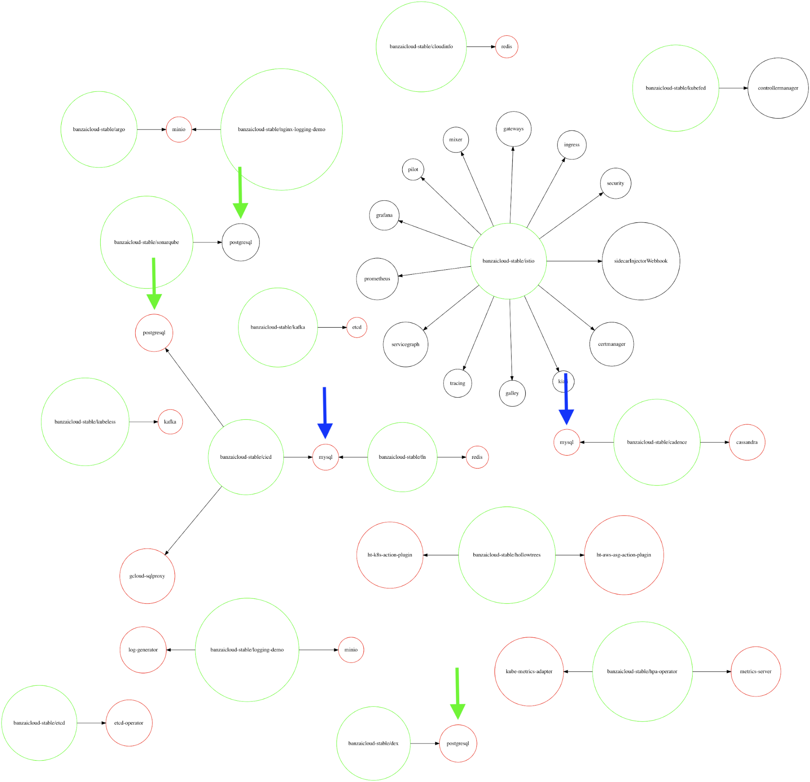
We tried to collate all results onto a single graph to better visualize dependency relationships. We continued to see fragmentation, but the graph became impossible to show in its entirety with the size of our dataset. From looking at our red dependencies, however, a number of commonly used items did emerge, as highlighted by the fan-out patterns below.
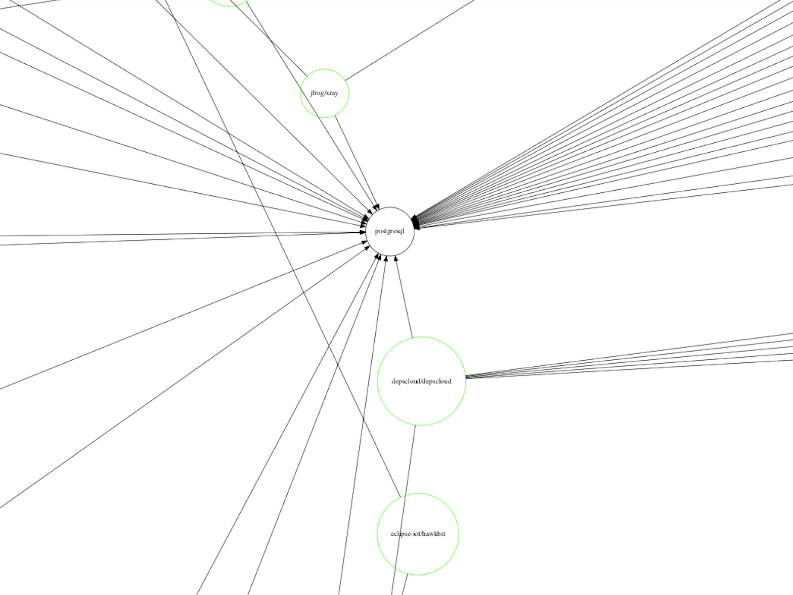 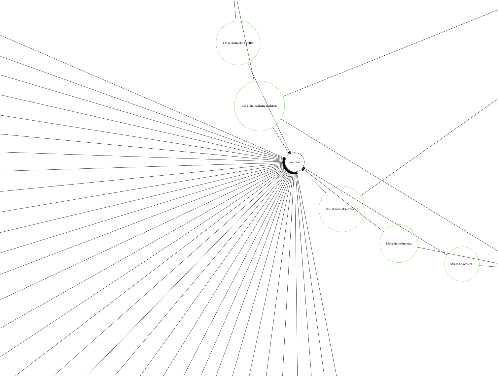
Instead, we kept the dependency diagrams per-repo and built up a single global count of dependency usage by dependency URI and their users. The most commonly used charts are below, although some are only consumed within their own org’s charts (such as k8s-at-home, nicholaswilde, and ibm-sch).

By far, the most reused dependency across ArtifactHub is bitnami/postgresql, which we’ll focus on in part three!
We also saw repositories with minimal external dependency usage such as “ibm-charts” utilizing several local file-path dependencies. This allows complete control of their code while also enabling reuse.
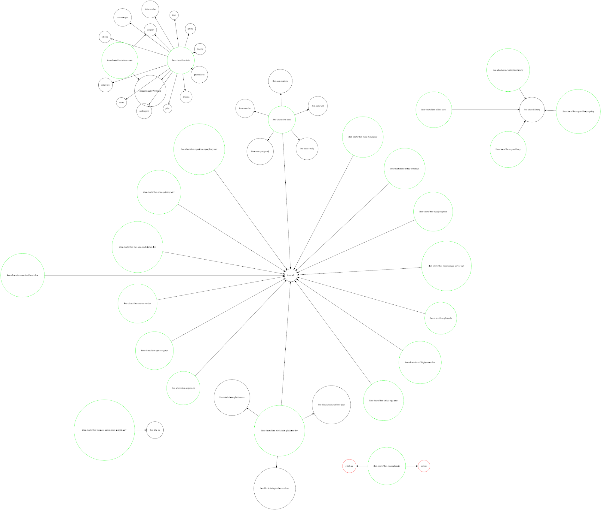
We found no direct correlation between the two when mapping the number of dependencies contained within a chart against the number of misconfigurations found in the templated output. For example, restorecommerce/system had the most dependencies, but had far fewer failed checks than pndaproject/cloud-pnda.
Solutions and recommendations
Understanding and addressing security and compliance errors at the Helm chart layer is a great way to harden your Kubernetes applications and ensure best practices. Whether writing your own or leveraging open-source Helm charts, it’s a good idea to take steps toward giving your team insight into the issues that the workload would face once deployed.
Embed static analysis into your CI/CD pipeline to catch issues early
Helm provides pre-deployment visibility and an easily automatable location for embedding security. Having your CI pipeline take the effort out of catching security misconfigurations pre-deployment is a simple, quick, and effective way to start improving your IaC security posture. Tools like Checkov integrate easily and provide guidance to your developers—almost like a virtual security engineer on your team.
Understand your runtime posture against the same policies
By running the same policies against manifests within the cluster, you can understand your current security posture and catch items that have already made it to production. This gives you a path to remediate live issues with automation in CI/CD preventing further misconfigurations.
Audit third-party Infrastructure code and implement guardrails
Before committing to using a specific module or IaC snippet, consider running a local CLI scan to check for glaring issues. If you or your team have administrative control over a Kubernetes cluster, consider implementing cluster-wide PodSecurityPolicies to protect against some insecure deployments.
Increase awareness of IaC security and tools available
Modules also serve as a publicly visible window to a subset of a user’s infrastructure, making it a good place to highlight the importance of infrastructure security with automated security scanning and simple visual indicators, such as README badges. If you have a public IaC repo or maintain a module, for example, Terraform, Helm, or CloudFormation, consider adding a badge to highlight IaC security concepts.
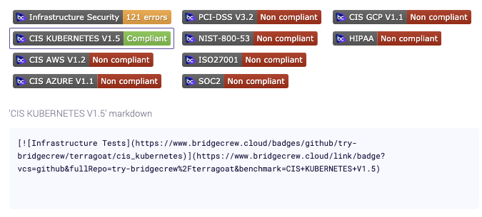
Learn more about getting your own Bridgecrew README badge.
Automate posture information at the point of consumption
Within the container ecosystem, we’re accustomed to vulnerability scans of public container images, listing layers, versions of common libraries and system tools, and warnings based on any known CVEs within those corresponding versions. Tools like Clair, an open-source tool used for the static analysis of vulnerabilities in application containers, scan container images and match them against known vulnerabilities:
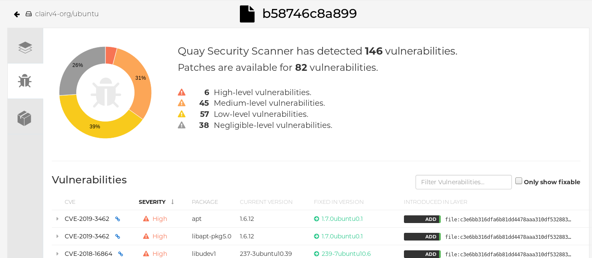
Implementing these developer and ecosystem recommendations is a great starting point for improving your security posture.
Coming up in part three
In part three of this series, we’ll take the most commonly used chart based on dependencies from the entire Artifact Hub dataset and go through each security issue line-by-line!
In the meantime, feel free to download the full set of data associated with each chart or use Helm Scanner to generate and analyze a copy of your own data. We’d love to hear what you find in our #CodifiedSecurity Slack community!